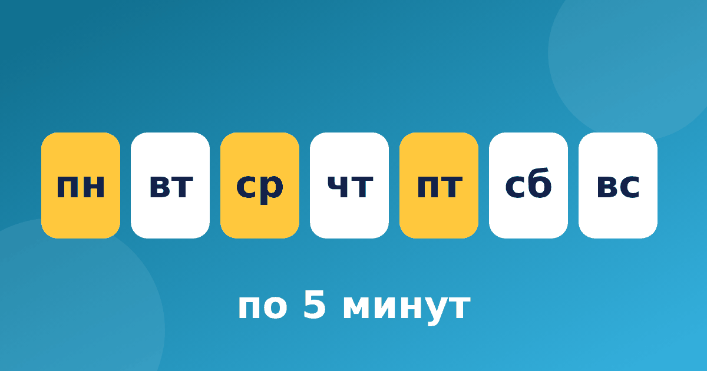

Как заниматься с ребёнком устным счётом каждый день понемногу

Родители часто спрашивают, с чего начать и как не бросить через неделю. Помогает простой план занятий по устному счёту: небольшие шаги, понятный порядок и никакого давления. Ниже пример плана на четыре недели для детей 1–3 классов. Это не требование школы, а ориентир. Подстраивайте его под своего ребёнка и не огорчайтесь, если придётся задержаться на одном этапе.
Сколько заниматься устным счётом и как часто
Хорошо работает формула «понемногу, но регулярно». Для малышей хватает 5 минут, для учеников постарше 10–15 минут. Пять дней в неделю обычно достаточно, а два дня стоит оставить свободными. Если ребёнок устал, закончите раньше. Об общем ритме домашних занятий подробно написано в статье сколько заниматься в день. Расписание занятий для ребёнка лучше повесить на видное место и вместе отмечать выполненные дни.
Несколько правил стоит принять до начала: занимайтесь в одно и то же время, держите рядом лист бумаги для пометок и заканчивайте на хорошей ноте, даже если не успели всё запланированное. Один пропущенный день не беда, просто продолжайте с того места, где остановились.
Первая неделя: состав числа
Цель недели: понять, из каких частей складывается число. Например, 7 состоит из 3 и 4, а 10 из 6 и 4. Ребёнок называет пары, выкладывает их на пальцах или предметах. Подробно этот этап описан в статье состав числа до 10. Не торопитесь двигаться дальше, пока ответы не станут привычными.
Для первой недели подойдут игры с предметами: разложите десять пуговиц и попросите разделить их на две кучки разными способами. Пусть ребёнок сам заметит, что 10 получается как 5 и 5, как 7 и 3 или как 9 и 1. Здесь не нужна скорость, только понимание.
Вторая неделя: сложение без перехода
Теперь переходим к примерам, где десяток не пересекается. 23 + 4 = 27, потому что три и четыре дают семь, а двадцать остаётся. 35 + 20 = 55, меняются только десятки. Просите ребёнка проговаривать, что он делает с десятками, а что с единицами. Три-четыре примера в день, не больше.
Если ребёнок справляется легко, добавьте примеры чуть сложнее, например 52 + 6 = 58 или 41 + 30 = 71. Если нет, оставайтесь на небольших числах. Не нужно проходить всё за один раз.
Третья неделя: сложение через десяток
Это самый трудный этап, поэтому ему отведена целая неделя. Пример 8 + 6. Добавляем два и получаем 10, остаётся ещё четыре, итого 14. Пример 9 + 7. Одна единица до десяти, шесть в остатке, ответ 16. Если ребёнок путается, вернитесь к предыдущей неделе. Объяснение для родителей собрано в статье сложение через десяток.
Разные дети осваивают этот приём за разное время, и это нормально. Одному хватает нескольких дней, другому нужно две недели. Помогает наглядность: числовая лента показывает, как мы шагаем до десятка, а затем делаем оставшийся шаг.
Четвёртая неделя: вычитание и повторение
Вычитаем так же, как складывали, по шагам. Пример 15 − 7. Сначала 15 − 5 = 10, затем 10 − 2 = 8. Пример 42 − 15. Сначала 42 − 10 = 32, затем 32 − 5 = 27. Последние дни недели посвятите повторению всего пройденного: выберите примеры, которые давались тяжелее всего.
Вычитание с переходом часто даётся тяжелее сложения, поэтому не расстраивайтесь, если здесь потребуется больше времени. Дайте ребёнку примеры 13 − 6 и 14 − 8 и пусть решит их двумя способами: через десяток и счётом назад. 13 − 6 = 7, а 14 − 8 = 6.
Как проходит одно занятие и что делать после месяца
Удобная схема: разминка на знакомых примерах, затем один новый приём, в конце игра. Идеи для игр есть в статье игры на устный счёт. Для занятий можно использовать тренажёр «Устный счёт»: модули идут в том же порядке, что и неделя за неделей в плане. В нём есть числовая лента с наглядными шагами и кнопка «Объясни по-другому». Бесплатно открыт модуль «Состав числа». Личный рекорд считается без таймера на вопросах.
Через месяц оцените результат спокойно: что стало получаться, что требует времени. Продолжайте повторять сложное и выбирайте новые примеры по силам. Идеальных планов не существует, главное, чтобы занятия оставались регулярными и не вызывали слёз.
Если ребёнок готов, переходите к двузначным числам и новым приёмам. Если нет, повторите самые трудные недели ещё раз, ничего страшного в этом нет.